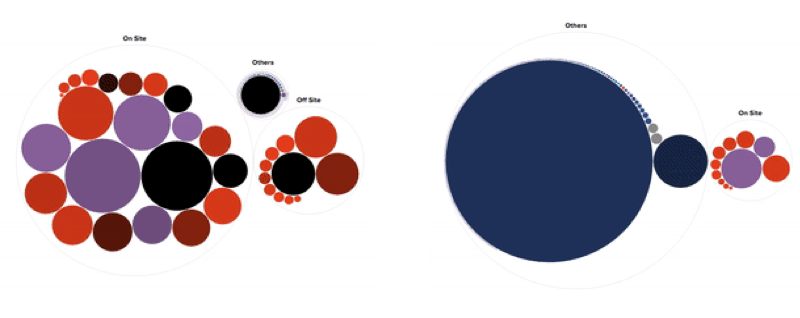
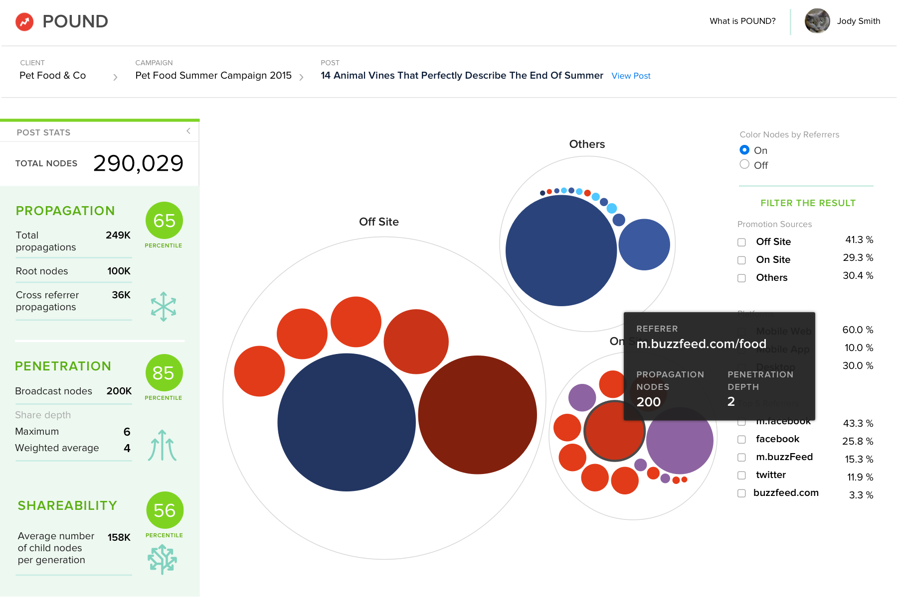

Pound Visualization & Dashboard
Visualize how content spread across the social web
Situation
BuzzFeed developed a proprietary tracking technology
called POUND (Process for Optimizing and Understanding Network Diffusion) that measures and traces how
content was shared and spread across the social web. The knowledge held in this data could help us to
understand our content, our audiences as well as provide insights on what makes a story go viral.
Solution
Create an exploratory dashboard that visualizes and measures the magnitude of a piece of content travels around
the social web. This helps users to understand our audience's consumption and sharing behavior, and guide our editorial
team and advertising partners to make better, more engaging story to connect people.

POUND was first made available to a few advertisers in an iterative partnership. As the sole design lead,
I worked closely with five engineers, two data scientists, two product managers and one project manager to
create the visualization and dashboard for our advertisers to explore data around their paid contents.
Explore the Visualization
Visualization is the core piece of the dashboard. I started the design by researching the existing D3 models
that show a network of nodes and sub-nodes. I collaborated with an engineer to build out several prototypes
with sample data and quickly identified the packed circle graph is the most intuitive to people, and most
feasible for rendering a large, dynamic dataset.

Color of the circle
The sharing pattern of a piece of content is represented in a cluster of circles. Each circle represents
a promotion source that ignites the sharing downstream. A promotion source could be a BuzzFeed promotion
(red), Facebook promotion (dark blue), Tweet (light blue), or newsletter link (gray).

Size and brightness/darkness
The size of the circle represents the number of shares that particular promotion has produced in totals.
The shade of the circle represents the number of re-shares downstream.

Together, they show the reach and engagement depth of the content. The bigger the circle,
the higher the reach; the darker the circle, the deeper the engagement.

Refine the Interaction
Prototype ⟶ Final version
The Dashboard
The dashboard enables our advertisers to drill down to each promotion source and see the key metrics
(Propagation, Penetration, and Sharability) that attributes the content virality. Users can also
filter to see the network effect on particular platforms (Facebook app, BuzzFeed app, BuzzFeed site)
or devices. (Mobile web, mobile app, Desktop)

Training & Onboarding
Along with our project manager and product manager, I put together an onboarding guide to train our
Client Services team who would be guiding with our advertisers to explore the data in the dashboard.
Results
-
Pound dashboard was no longer being supported because of a market shift in content consumption on
distributed social platforms. Despite that, I learned a lot about the importance of incremental
product development and how data infrastructure could affect a product downstream.
-
Designing data visualization for a large, dynamic dataset is different than for static dataset
because of unforeseen performance and edge cases. I was fortunate to have a close engineering partner
to try out a few prototypes with sample data and iterates the design onward to reduce speculation.
-
I also learn how to productize a novel technology, develop a concise sale pitch through design,
storytelling, and metaphor in order to make a concept stick.
Role: Design Lead. Team: 4 engineers,
2 data scientists, 2 product managers and 1 project manager.